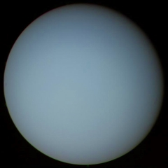

Uranus
Uranus, named after the the father of the Roman god Saturn, is the seventh planet in the Solar System and third of the gas giants. It is the third largest planet by diameter, yet fourth most massive.
- William Herschel discovered Uranus in 1781. The planet is too dim to have been seen by ancient civilizations. Herschel himself believed that Uranus was a comet at first, but several years later it was confirmed as a planet – making Uranus the first planet discovered in modern history. The original name proposed by Herschel was “Georgian Sidus” after King George III but the scientific community didn’t take to it. Instead, Uranus was proposed and accepted by astronomer Johann Bode and it comes from ancient Greek god Ouranos.
- Uranus rotates on its axis once every 17 hours and 14 minutes. Like Venus, it turns in a retrograde direction which is opposite to the direction Earth and the other six planets turn.
- It takes Uranus 84 Earth days to orbit the Sun. Its axis is at 98 degrees, which means it almost lies sideways as it orbits the Sun. This means that the north and south poles of Uranus lie near where the equator is on Earth. During parts of its orbit one or other of the poles directly face the Sun which means the planet gets around 42 years of direct sunlight followed by 42 years of darkness.
- A collision may have caused the unusual tilt of Uranus. The theory is that an Earth-sized planet may have collided with Uranus which forced its axis to drastically shift.
- Uranus wind speeds can reach up to 900 km per hour. This is roughly 560 miles per hour.
- The mass of Uranus is about 14.5 times the mass of Earth, making it the lightest of the four gas giants of the outer solar system.
- Uranus is often referred to as the “ice giant”. While it has a hydrogen and helium upper layer like the other gas giants, Uranus also has an icy mantle which surrounds its rock and iron core. The upper atmosphere of water, ammonia and methane ice crystals gives Uranus its distinctive pale blue color.
- Uranus is the second least dense planet in the solar system, after Saturn.
- The Voyager 2 is the only spacecraft to have flown by Uranus. This happened in 1986 and it flew past the planet at a distance of around 81,500 km. This mission returned the very first close-up images of the planet, its ring system and its orbiting moons.
- Uranus has 13 presently known rings. All except two Uranian are extremely narrow – they are usually a few kilometres wide. It is believed that the rings are probably quite young. The matter within the rings is thought to be parts of a moon or moons that were shattered by high speed impacts with an object such as a comet or asteroid.
Source: https://theplanets.org/uranus/